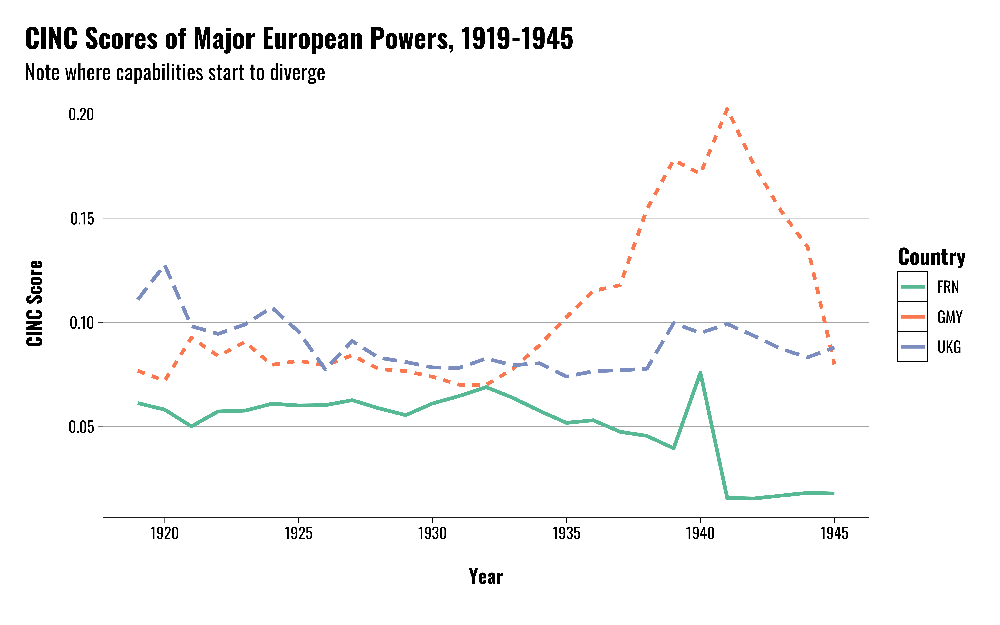
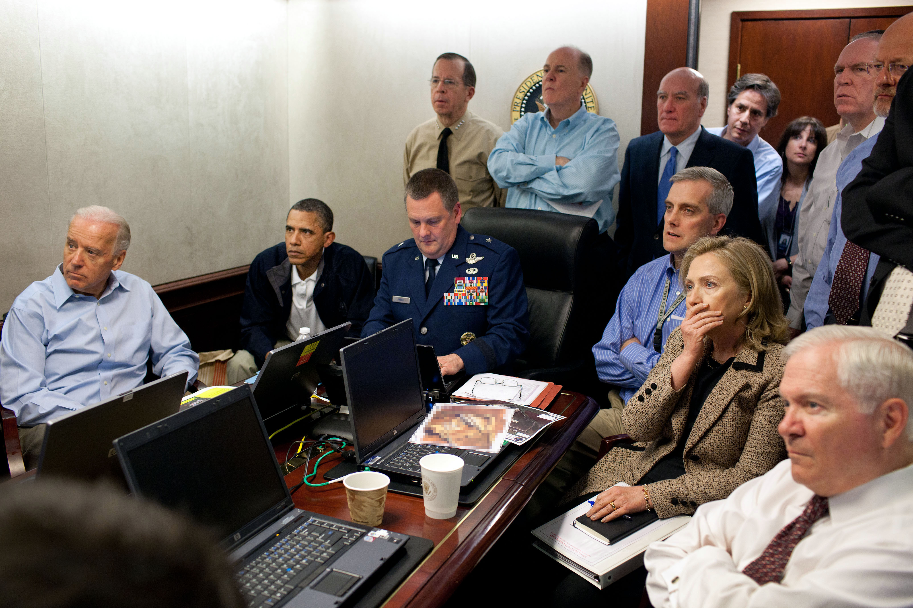
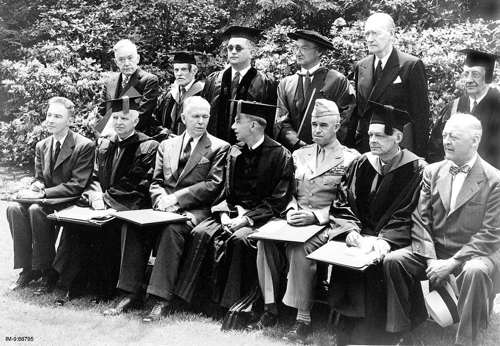
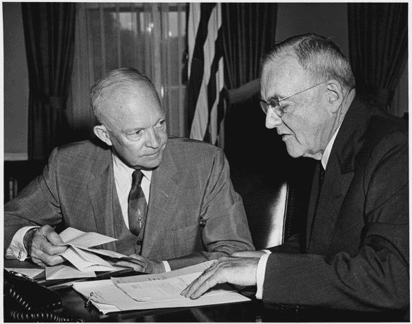
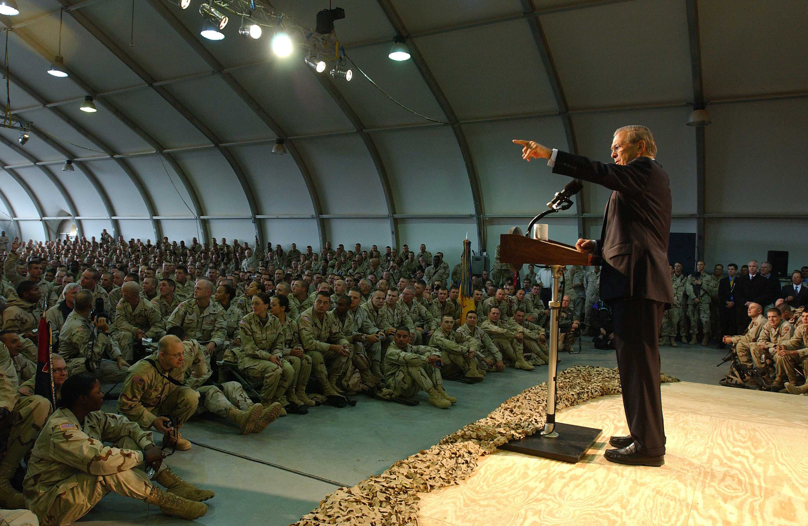
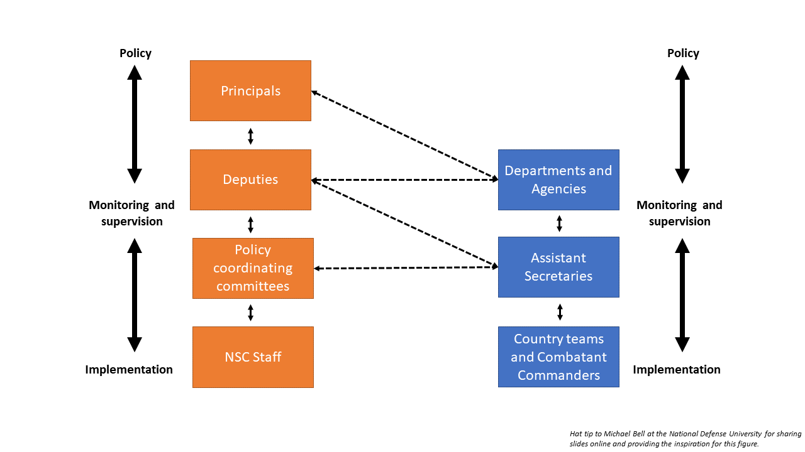
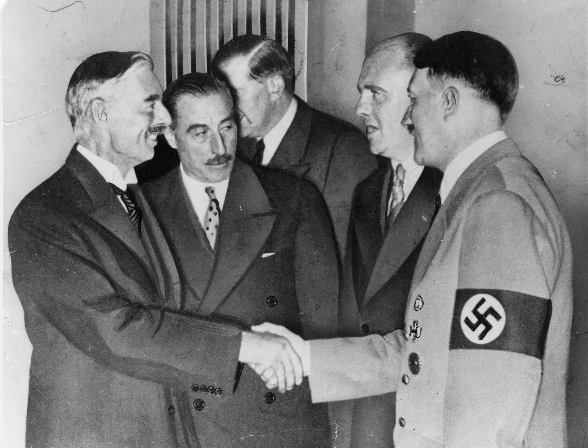
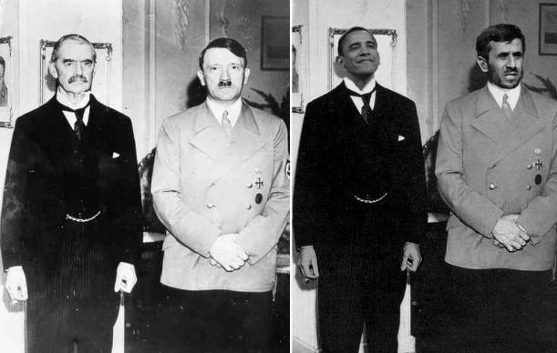
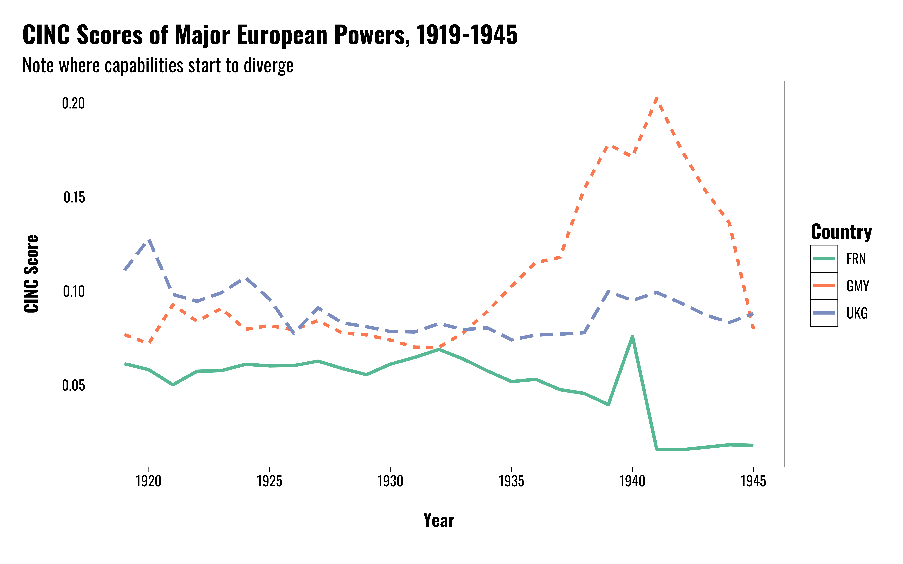
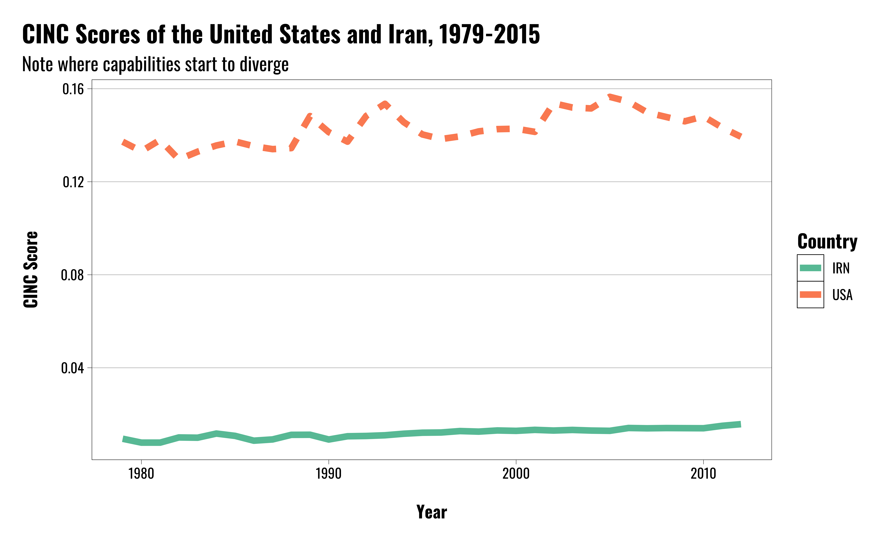

The Policymaking Process
Professor
Department of Political Science
011C Calvin Hall
meflynn@ksu.edu
2025-09-07
Policymaking versus decision-making
Organization of policymaking
Influence of policy on decisions
Pitfalls in policymaking and decision-making processes
What is the difference beteween policymaking and decision-making?
What are the origins of policymakers preferences?
What are some of the key institutions and/or roles in the policymaking process?
Policy: Plans for broad classes of future contingencies
vs.
Decision: Choices for dealing with immediate problems



Different processes:
Policy:
Typically oriented towards broader audiences
Longer time horizons
Decision
Cognitive and psychological factors
Smaller groups and shorter time horizons

National Security Act of 1947:
Created the basic bureaucratic organizations, positions, and structures we now use
Intended to standardize national security policy- and decision-making
Promote cooperation
Bureaucratic organizations:
Organizational mandates and roles inform positions and policy preferences
Develop expertise in particular areas
Carry out basic functions of government
National Security Council:
Designed to promote inter-agency cooperation and coordination
President chairs all NSC meetings
Statutory members:

Political factors:
Policymaking intimately tied to politics
Campaign promises and constituencies affect policies and related decisions
Presidents continue to monitor constituent preferences
The ideal process:
Full information
Broad range of options are considered
Breakdowns in information search
Reliance on single information channels
Reliance on analogies
Motivated information search




Not considering all the options
Sometimes politicians might not consider every possible option
Some options might be eliminated immediately because they’re not politically desirable
Bureaucratic officials or advisers may manipulate the range of options presented